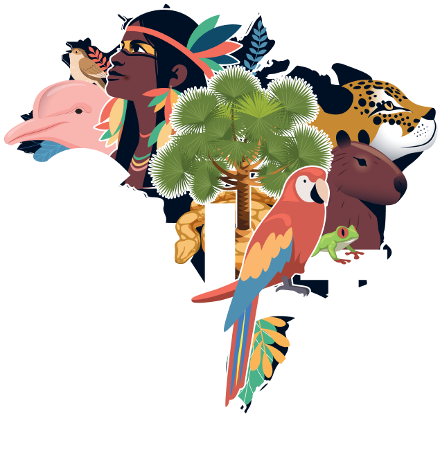
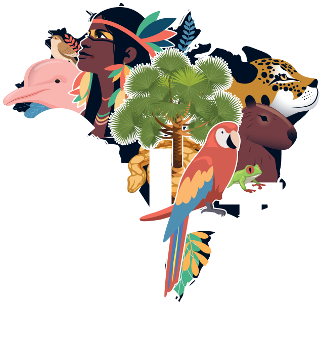
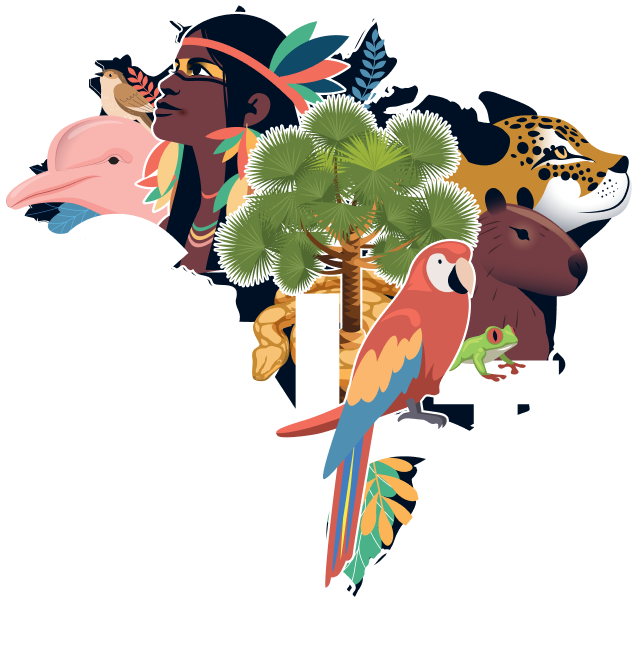
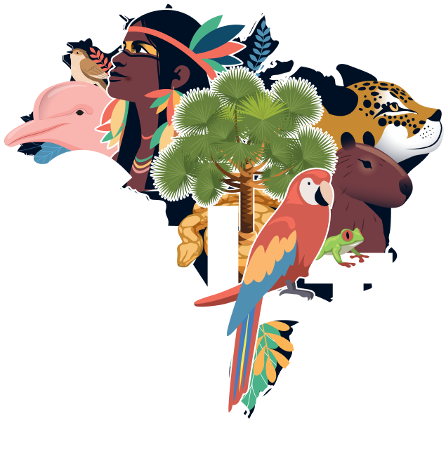

O Brasil é um país de proporções gigantescas, mas é na diversidade dos seus biomas que encontramos a verdadeira grandiosidade da nossa terra. Cada bioma brasileiro carrega uma riqueza imensurável, um convite para desvendar mistérios e reconhecer a complexa rede de vida que sustenta nossa existência. Da exuberância da Amazônia a resistência do Cerrado, das águas vibrantes do Pantanal às florestas remanescentes da Mata Atlântica, assim, somos parte de um país que pulsa biodiversidade em cada canto. Esses biomas não são apenas paisagens, são fontes de vida, inspiração e saberes que atravessam gerações. Compreender essa diversidade é enxergar o potencial para o desenvolvimento de tecnologias sociais que respeitem e dialoguem com os ecossistemas, promovendo uma harmonia entre o homem e a natureza.
No coração do Nordeste, a Caatinga se destaca como um bioma singular e fascinante. Muitas vezes esquecida, ela surpreende por sua beleza única e resiliente, a qual brota de cada planta e animal que a habita. Em meio ao solo seco e ao calor escaldante, a vida floresce de forma espetacular. A Caatinga é uma lição de resistência e adaptação. Ela é a prova viva de que, mesmo nas condições mais desafiadoras, há espaço para a criação, para o saber, para a inovação e a convivência com o semiárido.
As comunidades que habitam essa região são guardiãs de um conhecimento ancestral, que hoje se encontra com as tecnologias modernas, criando soluções inteligentes para lidar com a escassez de recursos, como a captação de água da chuva e a gestão sustentável de sua vegetação diferenciada.
E é neste vasto cenário de biodiversidade e conhecimento que Belo Jardim desponta como um símbolo de resiliência e inovação. Situada no agreste pernambucano, o município está inserido numa zona privilegiada, com destaques para as bacias hidrográficas dos rios Ipojuca e Capibaribe e, por sua vez, é recoberto por pequenas, médias e grandes nascentes, sendo necessárias ações que promovam a preservação e a conservação desses recursos, para não comprometer a capacidade de atender as necessidades das próximas gerações.
A verdade é que o município de Belo Jardim pulsa em sintonia com a Caatinga, um bioma de contrastes e beleza singular. Aqui, a vegetação seca e os animais que desafiam o calor revelam mais do que resistência: eles contam a história de um povo que, ao longo dos séculos, aprendeu a conviver com as adversidades e a transformar escassez em oportunidade. Nessa terra, a natureza e o saber caminham juntos, e é justamente nesse solo que a UFRPE/UABJ floresce, como um farol que ilumina o caminho para o futuro. Formando engenheiros e profissionais que aliam o conhecimento técnico à necessidade de proteger e valorizar o ambiente, a instituição abraça o desafio de desenhar soluções que dialoguem com a região.
Ao lado, o Instituto Federal de Pernambuco (IFPE) soma forças nessa missão, oferecendo formação em diferentes níveis, para que o desenvolvimento local seja sustentado pelo conhecimento. Juntas, UABJ e IFPE são mais que instituições de ensino: são pilares de transformação, que preparam gerações para criar tecnologias em harmonia com o meio ambiente, demonstrando que o progresso só é verdadeiro quando se constrói em parceria com a natureza.
A poucos quilômetros dali, Tacaimbó, com sua crescente população e sua energia vibrante, se une a esse ciclo de evolução. Jovens tacaimboenses, cheios de esperança, encontram na UABJ a oportunidade de construir um futuro promissor, buscando nas engenharias o conhecimento que os capacitará a transformar não apenas suas cidades, mas toda a região. Tacaimbó e Belo Jardim são, assim, cidades irmãs, ligadas pela mesma vontade de superar desafios e forjar um amanhã mais próspero e sustentável.
É nesse contexto de união entre natureza, ciência e tecnologia que a 21ª Semana Nacional de Ciência e Tecnologia (21ª SNCT) adquire um significado especial. Em Belo Jardim, a SNCT não é apenas uma celebração do conhecimento, mas um chamado à ação, um momento de dar voz à Caatinga e de reconhecer sua importância como patrimônio natural e cultural. O maior evento de popularização da ciência no país destaca, neste cenário, a necessidade urgente de integrar saberes tradicionais e inovações tecnológicas na construção de um Brasil mais sustentável.
Portanto, a 21ª SNCT é, enfim, um convite para que todos reconheçam o poder transformador da ciência, em prol da natureza e das pessoas, em um futuro onde a preservação dos biomas é a chave para o progresso verdadeiro. Confira todos os especialistas que participarão do evento:
Marcelo Leão : ginásio da AEB 11h às 12h
José Rubin Barbosa Maciel Filho (Pé na estrada) : ginásio da AEB 11h às 12h
André Ribeiro 30 vagas 14h às 17h Bloco A da AEB
Elias Silva e Jamerson Carlos 30 vagas 14h às 17h : Laboratório de informática da UABJ
Henrrique Patriota e equipe 30 vagas 14h às 17h : Laboratório de Automação da UABJ
Weslane Martin e Bruna Thorpe 30 vagas 14h às 17h : Bloco A da AEB
José roberto e equipe 30 vagas 14h às 17h: Laboratório de hídrica da UABJ
Anderson Paiva, Sylvana Melo e Leidjane Maciel 30 vagas 14h às 17h: Sala de desenho UABJ
Felipe Patriota e Luis Davi 30 vagas (10 equipes) 14h às 17h : Instituto Conceição Moura
Fábio Novaes 30 vagas 14h às 17h : AEB - Espaço xucuru
Izadora Freitas e Matheus Gabriel 20 vagas : UABJ
Ana Flávia Toscano, Pedro Vitor e Thalles Rodrigues 20 vagas : Laboratório de eletrônica
Lucas Sotero e Santiago Henrique 20 vagas Laboratório de eletrônica
Chaylane Franco e Jair Rodrigues 20 vagas AEB xucuru
Adriano da Silva e José Guilherme 20 vagas UABJ-laboratório de computação
Felipe Garcez 20 vagas AEB
Douglas Viana, Gabriel Pinheiro, Keila Roberta 20 vagas UABJ-laboratório de computação
Valdir Zacarias e Vitor Jorge 20 vagas UABJ-laboratório de computação
Carlos André 15 vagas Laboratório de Quimica da UABJ
Elias Silva, Matheus Rubem e Nathan Cunha 20 vagas laboratório de eletronica UABJ
Moisés Tavares 16 vagas AEB espaço XUCURU
Meninas na Ciencia 20 vagas Tacaimbó 09h às 12h
Meninas na Ciencia 20 vagas Tacaimbó 09h às 12h
Meninas na Ciencia 20 vagas Tacaimbó 09h às 12hp>
Meninas na Ciencia 20 vagas Tacaimbó 09h às 12h
Edilson Moura 20 vagas Tacaimbó 09h às 12h
Milene Figueira Local: Tacaimbó
Thaisa Alves Tacaimbó
Henrique Patriota e Monitores Tacaimbó
Eduardo Nabinger 20 vagas Tacaimbó
Adriana de fátima e Joycy samira Tacaimbó
Rhuan Cavalcanti 30 vagas Tacaimbó
Edson Nunes e Equipe Tacaimbó
20 vagas AEB
Weslane Martins 20 vagas AEB
Marcela Paiva(gerente da ETE de petrolina) Laboratório de quimica UABJ
Ginásio da AEB
Fábio Novaes Ginásio da AEB
Eduardo Castro Ginásio da AEB
Ana Catarina Gomes de Amorim(CRQ) Ginásio da AEB
Taiza Alvez 20 vagas Laboratório de Hidrica UABJ
éber Vizzarreta 20 vagas AEB bloco A
Luciano Junior 20 vagas AEB bloco A
Henrique Patriota, Marcio, Douglas e Pedro 20 vagas Laboratório de eletronica UABJ
auri Pereira da Silva 20 vagas AEB bloco A
Quadra do IFPE
Quadra do IFPE